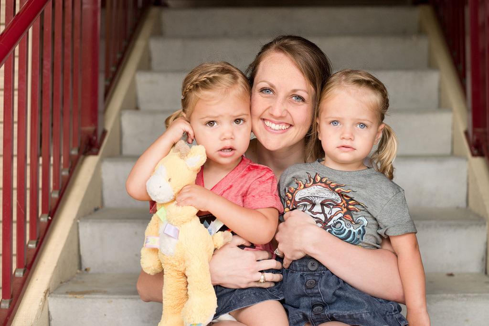
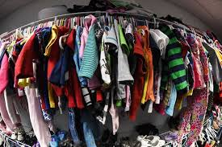
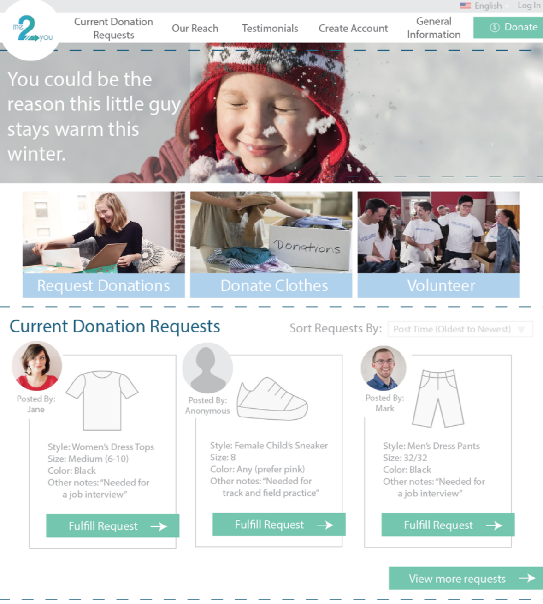
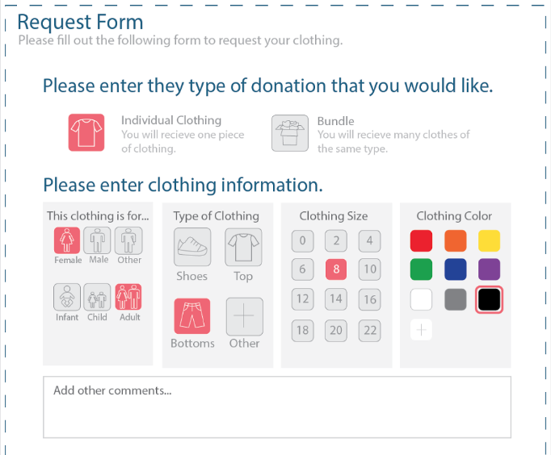

The Problem:
Donating is a great way to help those who are less fortunate than us. Unfortunately,
most people don't exactly know what they're doing when they donate clothes.
The Solution:
The following project aimed to design a second hand clothing website where users can
donate old clothing or request a certain donation. The high level goal of the website
are for it: (1) to allow for simple and easy donation process and (2) to have a clean
design providing only critical information.
The Approach:
1. Discover target users
2. Understand customer insights
3. Research competing companies
Personas
The website will have three layers of users: (1) Businesses that volunteer
to help our project, (2) Users looking for donations, (3) Users looking
to donate items.
Business Persona
Laundromasters is a laundromat service located just minutes from Magoun Square in Somerville, MA. Established in 1966, Laundromasters will be celebrating its 50th birthday in May.
To celebrate, owner Pat Healy is offering free laundering services to needing members in the local community.
Pat and the Healy Family, life-long residents of Somerville and patrons of the Somerville Homeless Coalition, are always
looking for ways to assist and support others. Pat has looked online for creative ways to donate or volunteer services.

Donation Receiver Persona
Mary Anderson is two months shy of 40. Mary lives in the small town of Hamilton,
Massachusetts with her 14-year-old twin daughters Lily and Maxx. Her daughters just
entered their freshman year in their towns’ public high school. After Mary’s divorce
last year, her budget for her daughters’ everyday essentials has dramatically decreased.
Mary has recently found interest in shopping at Goodwill and other second hand clothing stores.
She has been able to purchase clothing with some of her favorite labels for a bargain.
Donator Persona
Hillary is a 36-year-old stay-at-home mother who lives in Jamaica Plain, MA, with her husband,
13-year-old daughter and 6-year-old twin sons. During college, Hillary volunteered at homeless shelters
and elementary schools in impoverished neighborhoods. When her daughter started to grow out of her clothes,
Hilary decided to donate the clothes to those in need.

Focus Group
We conducted a focus group of 7 participants. Two of these participants were
Tufts students (age 22), one was a retired military engineering (age 75),
one was a retired elementary school teacher (age 74), one was a current elementary
school teacher (age 24), one was a motivational speaker on mental health and advocacy
(age 23) and one was a medical professional (age 55).
Results
Many of them said they felt that if donors had to go through and find
a match for a request for their clothing, it put a lot of effort on
the donors, and would be a deterrent for them. It was suggested that
some system be incorporated in which donors could post an inventory of
the clothes and be alerted every time someone posted a request that
matched an item in their inventory. This way, Me2You wouldn’t have to
have a warehouse full of inventory, but it would take some of the work
off of the donor as they wouldn’t have to scroll through requests.
Initial Designs
Two design concepts were formed that would create polarizing designs.
There are many aesthetic differences between the two including:
(1) pictures vs flat color, (2) cool, calming pastel tones vs vivid,
richer color palette, and (3) formal vs informal display of information.
Usabiltiy Testing and Final Designs
After some usability testing, we were able to incorporate user suggestions into one final design.
Users appreciated our large text, clear and accessible information, Icons/Images, color scheme,
and the emotional connection we created. There was some confusion with the navigation of the website
and how to complete certain tasks.

The final design shows a warm and thoughtful landing page that will draw users in.
Users in search of filling an individuals request have the ability to view the current
requests on the website, allowing them a more direct way of seeing their clothes go to
a good cause.

Because individuals requesting clothes will come from different backgrounds and have
different technical capabilities, it was important to create an intuitive clothing
request form that allows individuals to request clothes without any confusion.